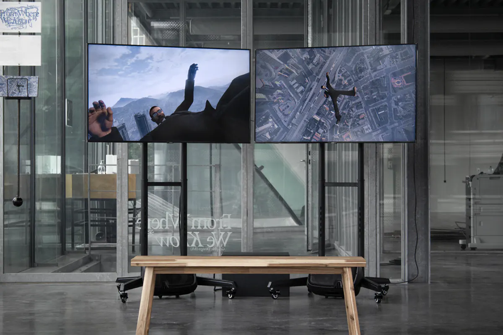
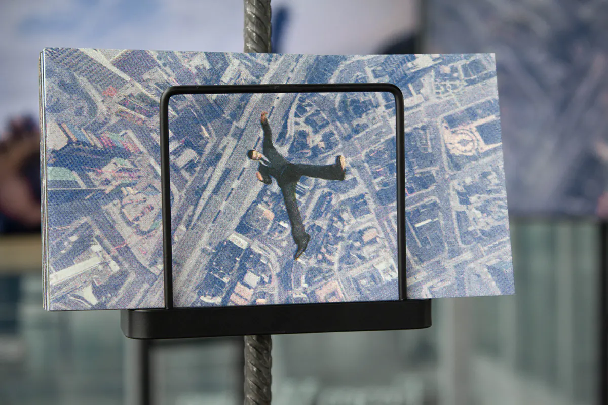

Founded by Two
Year: 2021
Category: Graduation project(Sjors Rigters)
Exhibited at: Graduation Show 2021 | Royal Academy of Art, The Hague (2021)
Category: Graduation project
Exhibited at: Graduation Show 2021
Polarized Interactions
Short machinima film
Polarized Interactions
Short machinima film
Year: 2021
Category: Graduation project(Sjors Rigters)
Exhibited at: Graduation Show 2021 | Royal Academy of Art, The Hague (2021)
Video games are an increasingly dominant part of many people’s daily lives. Game developers create complex worlds to give the player the most immersive feeling possible, with the logical consequence that portrayed realities only revolve around the player and Category: Graduation project
Exhibited at: Graduation Show 2021


Previous
Next